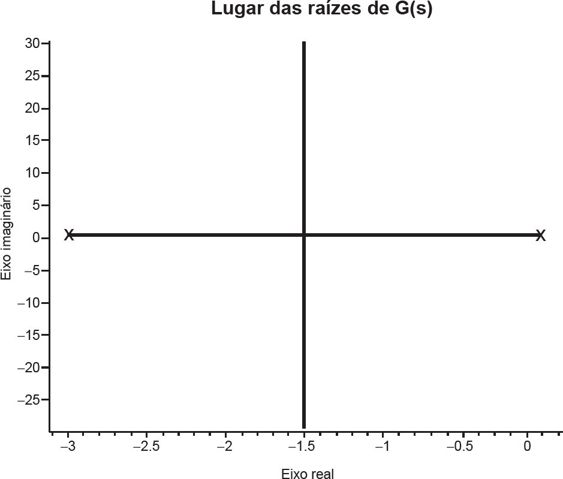

O lugar das raízes, também chamado root locus, é importante procedimento para a análise de sistemas de controle, bem como para a síntese de compensadores para esses sistemas. Por exemplo, deseja-se controlar, com um compensador série e realimentação negativa e unitária, um sistema sujeito a uma entrada degrau, cuja planta tem função de transferência
s
e cujo lugar das raízes tem a forma ilustrada na figura abaixo.
A partir do sistema acima, avalie as asserções a seguir e a relação proposta entre elas.
I. Um compensador proporcional sempre produz um sistema em malha fechada contendo termos de resposta oscilatória.
PORQUE
II. As raízes do sistema em malha fechada são complexas para um compensador proporcional com ganho acima de 2,25.
A respeito dessas asserções, assinale a opção correta.